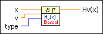
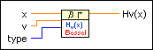
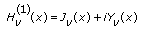
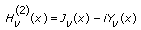

Hankel Function Hv VI
Owning Palette: Bessel Functions VIs
Requires: Full Development System
Computes the Hankel function, which is also known as the Bessel function of the third kind.

 Add to the block diagram Add to the block diagram |
 Find on the palette Find on the palette |
Owning Palette: Bessel Functions VIs
Requires: Full Development System
Computes the Hankel function, which is also known as the Bessel function of the third kind.

| Add to the block diagram |
Find on the palette |
The following equation defines the Hankel function of the first kind of order v.

The following equation defines the Hankel function of the second kind of order v.

where Jv is a Bessel function of the first kind and Yv is a Bessel function of the second kind.
The following intervals for the input values of the VI define the Hankel function.
For any real value of order v, LabVIEW supports positive real values of x.